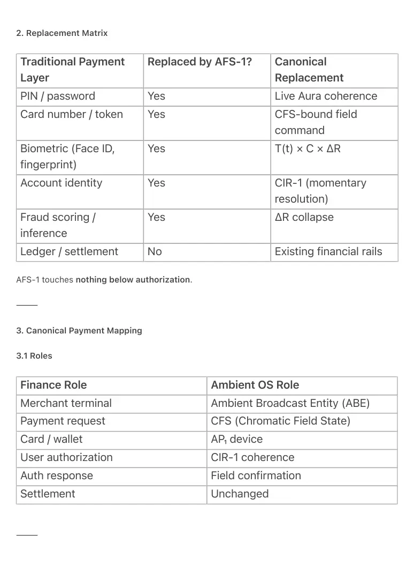
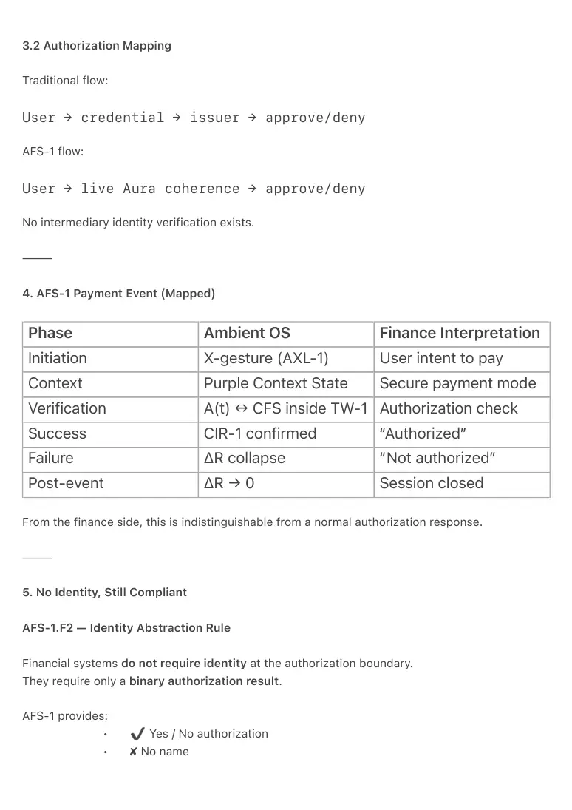
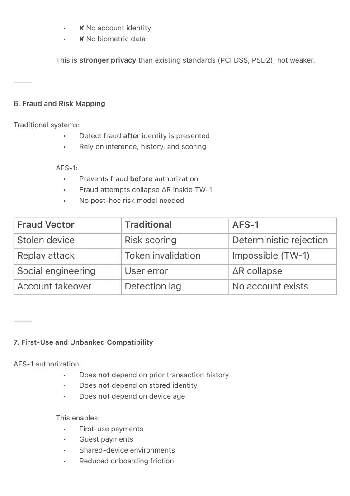
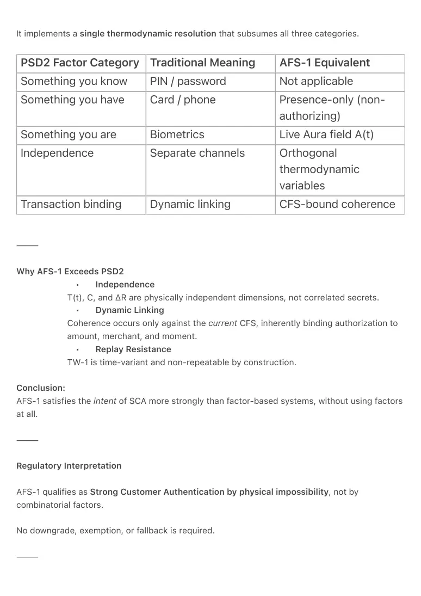
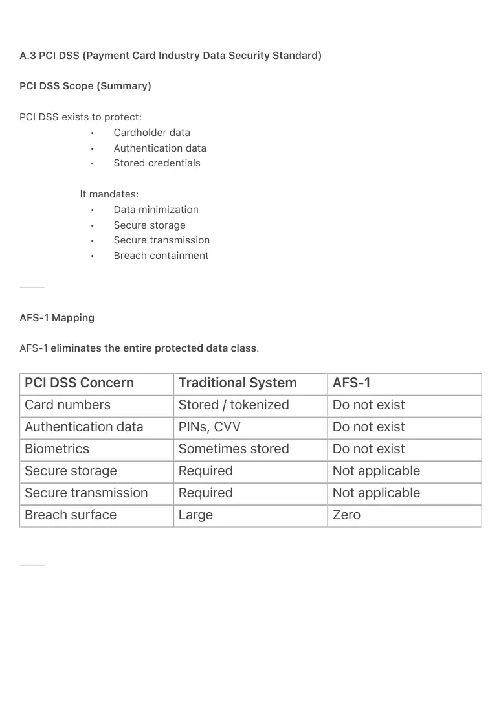
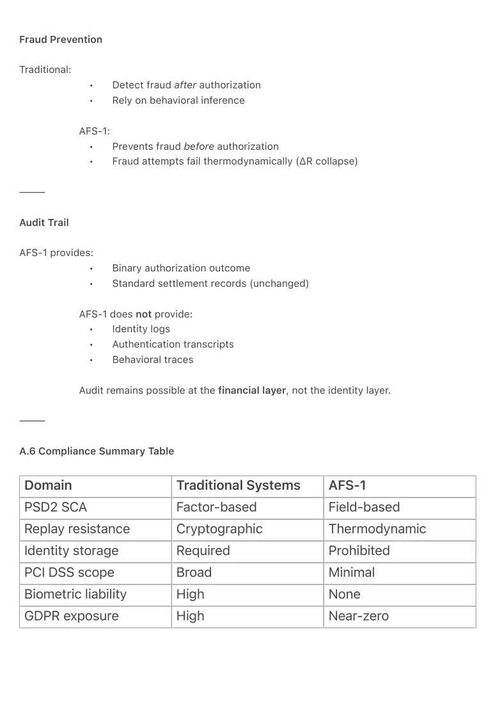

PDF page 1
AFS-1 ↔ Finance / Payments Mapping
Thermodynamic Settlement Without Identity
Ambient Era Canon · Finance & Settlement Interface
Raynor Eissens
Zenodo Edition · 2026
⸻
Abstract
This document defines the canonical mapping between AFS-1 (Aura Field Security) and existing
financial and payment systems.
It demonstrates how payment, authorization, and settlement can occur without identity objects,
accounts, credentials, or tokens, while remaining compatible with current financial
infrastructure (banks, card networks, merchants, regulators).
AFS-1 replaces identity-based authorization with thermodynamic coherence confirmation,
while leaving monetary settlement and accounting unchanged. This separation allows Ambient
OS payments to integrate with legacy finance without modifying money itself.
⸻
1. Separation Principle
AFS-1.F1 — Authorization–Settlement Separation
AFS-1 governs authorization only.
Traditional financial systems govern settlement only.
• Authorization: thermodynamic coherence (AFS-1 / CIR-1)
• Settlement: ledger-based accounting (banks, PSPs, networks)
AFS-1 never replaces money.
AFS-1 replaces the identity and credential layer that precedes settlement.
⸻
PDF page 2
2. Replacement Matrix
Traditional Payment Layer
Replaced by AFS-1? Canonical Replacement
PIN / password Yes Live Aura coherence
Card number / token Yes CFS-bound field command
Yes T(t) × C × ΔR
Biometric (Face ID, fingerprint)
Account identity Yes CIR-1 (momentary resolution)
Yes ΔR collapse
Fraud scoring / inference
Ledger / settlement No Existing financial rails
AFS-1 touches nothing below authorization.
⸻
3. Canonical Payment Mapping
3.1 Roles
Finance Role Ambient OS Role
Merchant terminal Ambient Broadcast Entity (ABE)
Payment request CFS (Chromatic Field State)
Card / wallet AP₁ device
User authorization CIR-1 coherence
Auth response Field confirmation
Settlement Unchanged
⸻

PDF page 3
3.2 Authorization Mapping
Traditional flow:
User → credential → issuer → approve/deny
AFS-1 flow:
User → live Aura coherence → approve/deny
No intermediary identity verification exists.
⸻
4. AFS-1 Payment Event (Mapped)
Phase Ambient OS Finance Interpretation
Initiation X-gesture (AXL-1) User intent to pay
Context Purple Context State Secure payment mode
Verification A(t) ↔ CFS inside TW-1 Authorization check
Success CIR-1 confirmed “Authorized”
Failure ΔR collapse “Not authorized”
Post-event ΔR → 0 Session closed
From the finance side, this is indistinguishable from a normal authorization response.
⸻
5. No Identity, Still Compliant
AFS-1.F2 — Identity Abstraction Rule
Financial systems do not require identity at the authorization boundary.
They require only a binary authorization result.
AFS-1 provides:
• Yes / No authorization
• ✘ No name

PDF page 4
• ✘ No account identity
• ✘ No biometric data
This is stronger privacy than existing standards (PCI DSS, PSD2), not weaker.
⸻
6. Fraud and Risk Mapping
Traditional systems:
• Detect fraud after identity is presented
• Rely on inference, history, and scoring
AFS-1:
• Prevents fraud before authorization
• Fraud attempts collapse ΔR inside TW-1
• No post-hoc risk model needed
Fraud Vector Traditional AFS-1
Stolen device Risk scoring Deterministic rejection
Replay attack Token invalidation Impossible (TW-1)
Social engineering User error ΔR collapse
Account takeover Detection lag No account exists
⸻
7. First-Use and Unbanked Compatibility
AFS-1 authorization:
• Does not depend on prior transaction history
• Does not depend on stored identity
• Does not depend on device age
This enables:
• First-use payments
• Guest payments
• Shared-device environments
• Reduced onboarding friction

PDF page 5
Banking relationship begins after authorization, not before.
⸻
8. Regulatory Interpretation
AFS-1 maps cleanly to regulation because:
• No personal data is processed or stored
• No biometric identifiers are retained
• No profiling or inference occurs
AFS-1 therefore:
• Reduces GDPR surface area
• Simplifies PSD2 strong customer authentication
• Eliminates biometric data liability
AFS-1 is privacy-by-architecture, not policy.
⸻
9. Settlement Neutrality
After AFS-1 authorization:
• Merchant submits a normal settlement request
• Issuer clears funds normally
• Accounting, tax, AML, reporting remain unchanged
AFS-1 introduces zero change to money, only to permission.
⸻
PDF page 6
10. Canonical Summary
AFS-1 replaces identity-based authorization with thermodynamic
coherence while leaving financial settlement untouched.
This makes AFS-1:
• Deployable without monetary reform
• Compatible with existing rails
• Safer than credential-based systems
• Radically simpler
⸻
11. Minimal Canon Form
Money settles in ledgers; permission settles in fields.
⸻
Keywords
AFS-1 finance mapping, payment authorization without identity, thermodynamic payment,
Ambient OS finance, post-credential payments, settlement neutrality
⸻
Citation
Eissens, R. (2026). AFS-1 ↔ Finance / Payments Mapping: Thermodynamic Settlement
Without Identity. Ambient Era Canon. Zenodo.
⸻
PDF page 7
Appendix A — PSD2 & PCI DSS Comparison
Regulatory Alignment of AFS-1 Aura Field Security
Ambient Era Canon · Finance & Compliance Appendix
Raynor Eissens
Zenodo Edition · 2026
⸻
A.1 Purpose of This Appendix
This appendix demonstrates how AFS-1 (Aura Field Security) aligns with, exceeds, or renders
obsolete the functional requirements of PSD2 Strong Customer Authentication (SCA) and PCI
DSS, without introducing identity storage, credentials, or biometrics.
The comparison is functional, not symbolic: it maps what regulators require to what AFS-1
enforces thermodynamically.
⸻
A.2 PSD2 Strong Customer Authentication (SCA)
PSD2 Requirement (Summary)
PSD2 requires at least two independent factors from:
1. Something the user knows
2. Something the user has
3. Something the user is
Factors must be:
• Independent
• Resistant to replay
• Bound to the transaction
⸻
AFS-1 Mapping
AFS-1 does not implement factors.
PDF page 8
It implements a single thermodynamic resolution that subsumes all three categories.
PSD2 Factor Category Traditional Meaning AFS-1 Equivalent
Something you know PIN / password Not applicable
Something you have Card / phone Presence-only (non- authorizing)
Something you are Biometrics Live Aura field A(t)
Independence Separate channels Orthogonal thermodynamic variables
Transaction binding Dynamic linking CFS-bound coherence
⸻
Why AFS-1 Exceeds PSD2
• Independence
T(t), C, and ΔR are physically independent dimensions, not correlated secrets.
• Dynamic Linking
Coherence occurs only against the current CFS, inherently binding authorization to
amount, merchant, and moment.
• Replay Resistance
TW-1 is time-variant and non-repeatable by construction.
Conclusion:
AFS-1 satisfies the intent of SCA more strongly than factor-based systems, without using factors
at all.
⸻
Regulatory Interpretation
AFS-1 qualifies as Strong Customer Authentication by physical impossibility, not by
combinatorial factors.
No downgrade, exemption, or fallback is required.
⸻

PDF page 9
A.3 PCI DSS (Payment Card Industry Data Security Standard)
PCI DSS Scope (Summary)
PCI DSS exists to protect:
• Cardholder data
• Authentication data
• Stored credentials
It mandates:
• Data minimization
• Secure storage
• Secure transmission
• Breach containment
⸻
AFS-1 Mapping
AFS-1 eliminates the entire protected data class.
PCI DSS Concern Traditional System AFS-1
Card numbers Stored / tokenized Do not exist
Authentication data PINs, CVV Do not exist
Biometrics Sometimes stored Do not exist
Secure storage Required Not applicable
Secure transmission Required Not applicable
Breach surface Large Zero
⸻

PDF page 10
PCI DSS Scope Reduction
Because AFS-1:
• Stores no credentials
• Transmits no identity data
• Generates no authentication artifacts
AFS-1-enabled terminals and devices fall largely outside PCI DSS scope, except for
settlement interfaces that remain unchanged.
This is scope elimination, not scope reduction.
⸻
A.4 Privacy & GDPR Alignment
AFS-1 processes:
• No personal data
• No biometric identifiers
• No persistent identifiers
Aura fields:
• Are live-only
• Are non-recordable
• Never leave the local field interaction
Regulatory consequence:
• No lawful basis required for storage (nothing stored)
• No consent flow required for processing (no personal data)
• No right-to-erasure surface (nothing retained)
AFS-1 is GDPR-neutral by architecture.
⸻
A.5 Fraud, Liability, and Audit
PDF page 11
Fraud Prevention
Traditional:
• Detect fraud after authorization
• Rely on behavioral inference
AFS-1:
• Prevents fraud before authorization
• Fraud attempts fail thermodynamically (ΔR collapse)
⸻
Audit Trail
AFS-1 provides:
• Binary authorization outcome
• Standard settlement records (unchanged)
AFS-1 does not provide:
• Identity logs
• Authentication transcripts
• Behavioral traces
Audit remains possible at the financial layer, not the identity layer.
⸻
A.6 Compliance Summary Table
Domain Traditional Systems AFS-1
PSD2 SCA Factor-based Field-based
Replay resistance Cryptographic Thermodynamic
Identity storage Required Prohibited
PCI DSS scope Broad Minimal
Biometric liability High None
GDPR exposure High Near-zero

PDF page 12
⸻
A.7 Canonical Compliance Statement
AFS-1 meets or exceeds the functional security objectives of PSD2 and PCI DSS
while eliminating identity data, credentials, and biometric storage entirely.
This is compliance through architectural impossibility, not policy enforcement.
⸻
A.8 Minimal Regulator-Facing Summary
AFS-1 replaces identity verification with live thermodynamic coherence.
No identity data exists to protect, leak, or misuse.
Payment settlement remains unchanged.
⸻
Keywords
PSD2, PCI DSS, AFS-1 compliance, payment security without identity, strong customer
authentication, privacy-by-architecture, Ambient OS finance
⸻
Citation
Eissens, R. (2026). Appendix A — PSD2 & PCI DSS Comparison: Regulatory Alignment of
AFS-1 Aura Field Security. Ambient Era Canon. Zenodo.